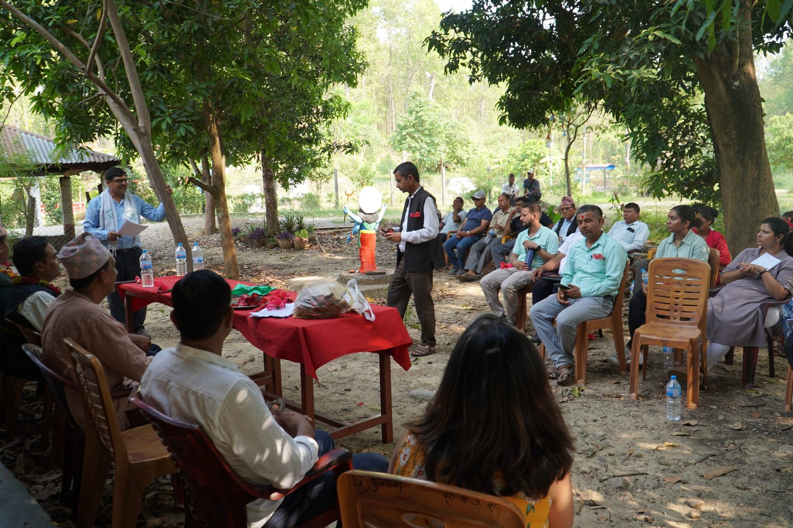
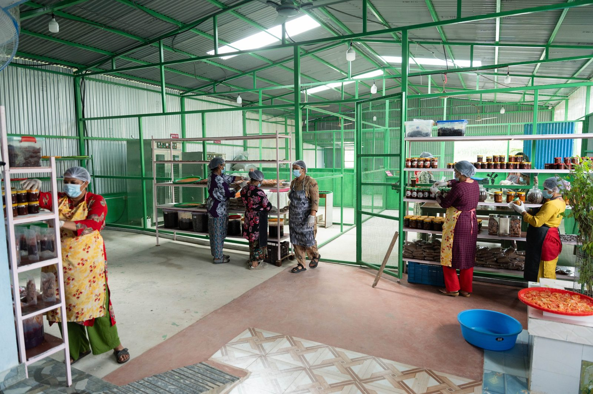
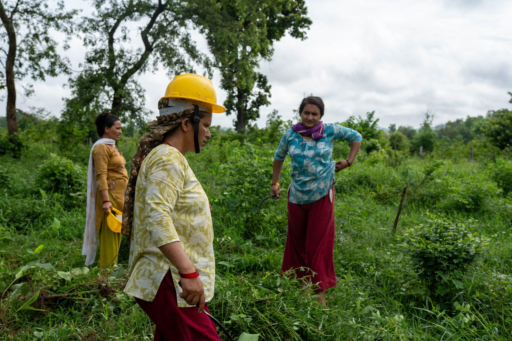
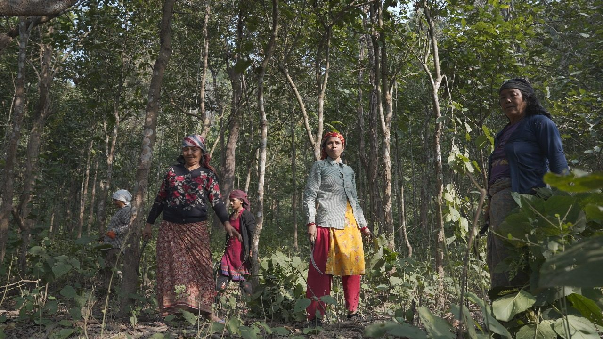
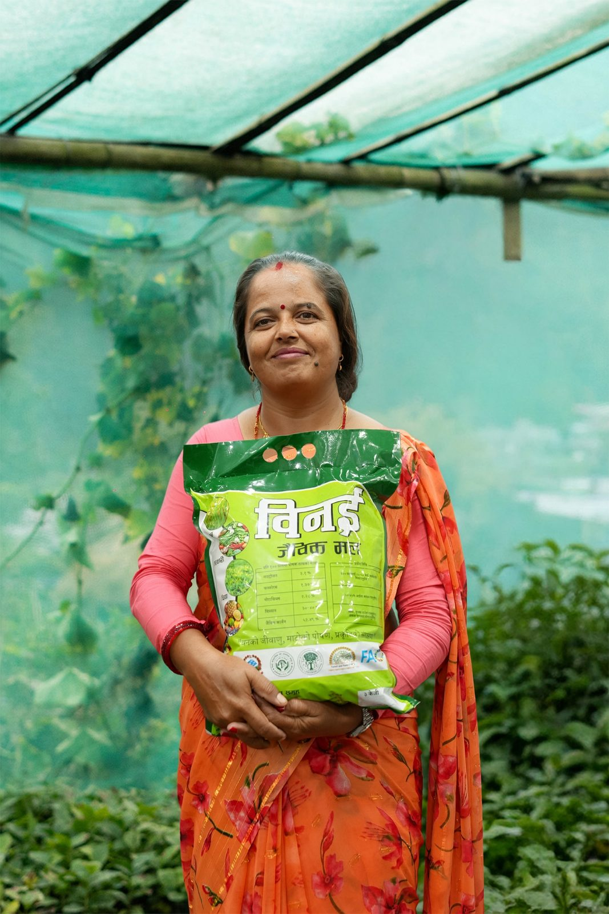
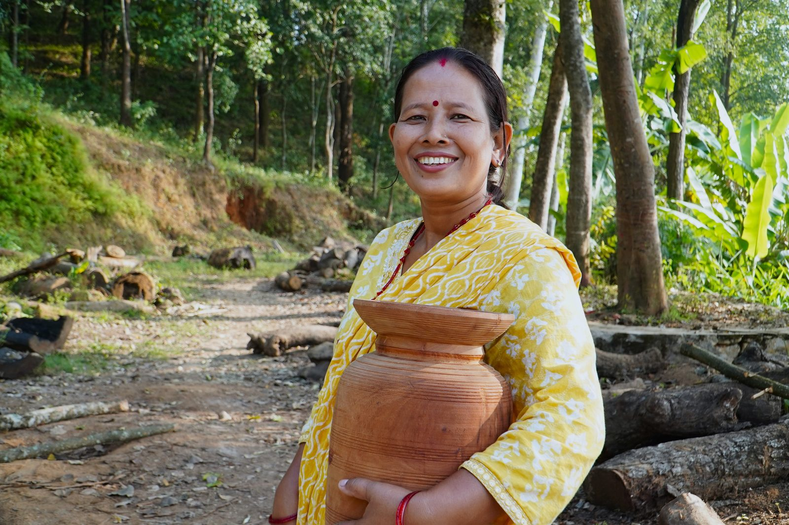
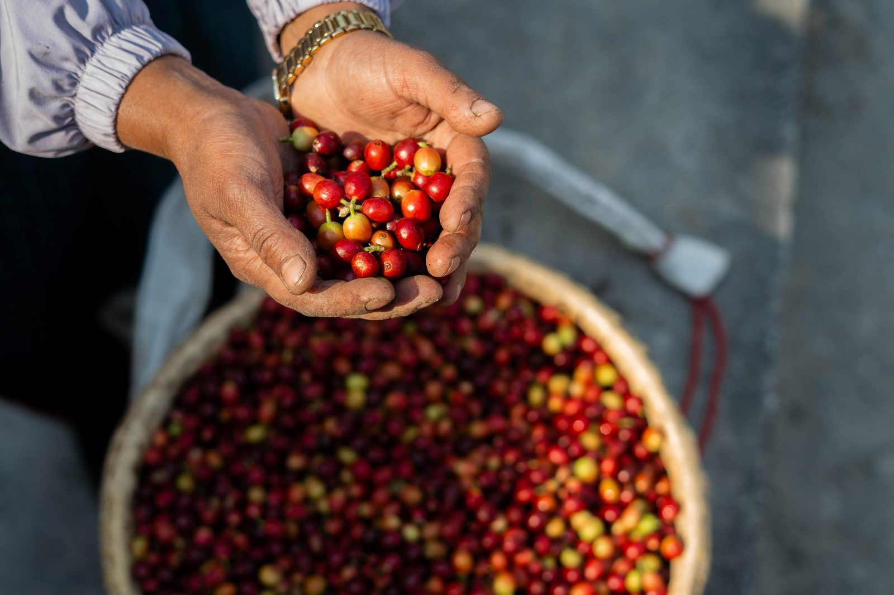

Web Map
68 grantee organizations and 73 agreements — filter by province, district, commodity and investment flow. Open the full map →
The Forest and Farm Facility (FFF) Nepal strengthens forest and farm producer organizations to build sustainable enterprises, influence decisions and improve livelihoods. By connecting producers with knowledge, markets, finance and partnerships, FFF supports inclusive rural economies and climate-resilient landscapes.
Our action
Financing, technical support and peer learning — led by producers themselves.




Harnessing collective strength to amplify producers' voices through multi-stakeholder dialogue, while strengthening institutions through inclusive governance.
Testimonials
Producers tell what has changed in their territories.

NawalpurWomen in Binayi Triveni turn fire-prone forest undergrowth into organic fertilizer, creating jobs while reducing wildfire risks.
Read the story →
MakwanpurWomen artisans in Piple-Pokhara turn forest wood and sawmill offcuts into handcrafted products, earning incomes and preserving traditional skills.
Read the story →
KavreNepal's coffee producers grow a brighter future through climate-resilient farming, local roasting and stronger market connections.
Read the story →Since 2012
FFF support has enabled Forest and Farm Producer Organisations (FFFPOs) to achieve significant results in gaining access to markets and better prices, leveraging financial resources, policy changes and tenure security, and improving livelihoods.
Why forests matter
More than 1.5 billion smallholders around the world depend on forest landscapes for their food and livelihoods. The Forest and Farm Facility (FFF) is a programme hosted by the Food and Agriculture Organization of the United Nations (FAO), in partnership with IIED and Agricord, that supports forest and farm producer organizations to organise, connect and develop new markets and opportunities.